About me
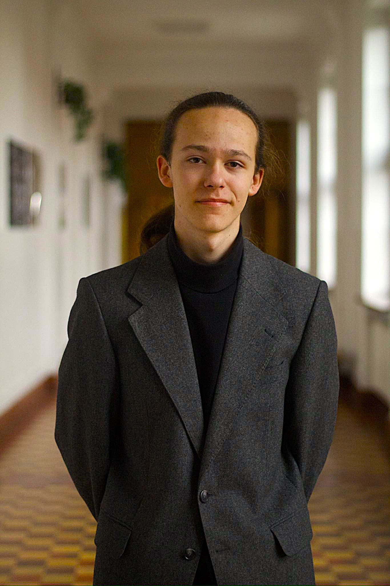
Name: Paweł Gleindek
Birthday: 02.11.2004
Age: 21
Location: Bielsko-Biała / Cracow, PL
Study: Computer science and intelligent systems
University: AGH University of Cracow
Curriculum Vitae
- 2011-2019: 3rd Elementary School in Bielsko-Biała
- 2019-2023: 1st High School in Bielsko-Biała
- May 2023: Matura exams (equivalent to british A-levels)
- 2023-now: AGH University in Cracow
I have always been an eager learner and a curious person, especially in the science field. In elementary school I was participating in math, physics and IT competitions (Kangur, Lwiątko, Bóbr) scoring several awards. I was attending additional classes to broaden my knowledge and skills in these areas.
In high school I turned my attention to programming and computer science completing my first online courses in C++, python and web technologies. I have also been working with students research group Young Blade Runners on some programming and automation projects. I have not forgot about math, physics and competitions, which resulted in satisfying scores on A-levels (math 98%, physics 90%).
At university I dedicated myself to learning and improving my skills in programming, software engineering and data science. I have been taking courses in algorithms, databases, artificial intelligence and machine learning. I have also been working on several projects to apply my knowledge in practice.
All this time I was participating in various activities besides my main path of study, such as music bands and school orchestra. I have also broadened my horizons by learning humanities (especially history of art) and languages (english and italian). I have undergone numerous travels and cultural experiences that have enriched my perspective and understanding of the world. I am also actively involved in the life of my parish.
IT details
I am currently studying Computer science and intelligent systems on EAIiIB Faculty at AGH University of Cracow (Poland). My main interests are machine learning, data processing and artificial intelligence, which I am actively exploring and developing skills in (recently I started pursuing Harvard and IBM courses focused on data science). I am also familiar with various programming languages and frameworks.
Tech stack
Frontend
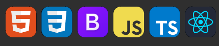
Backend
Databases
Data science & ML
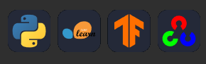
Other tools
Projects
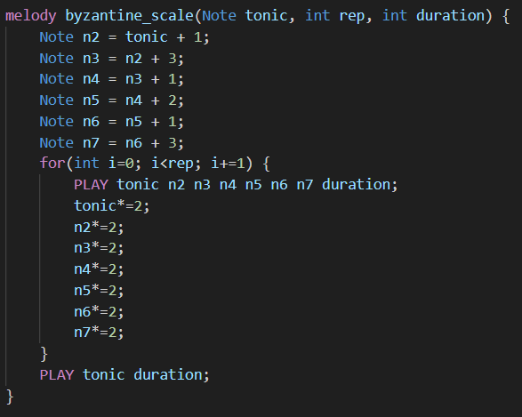
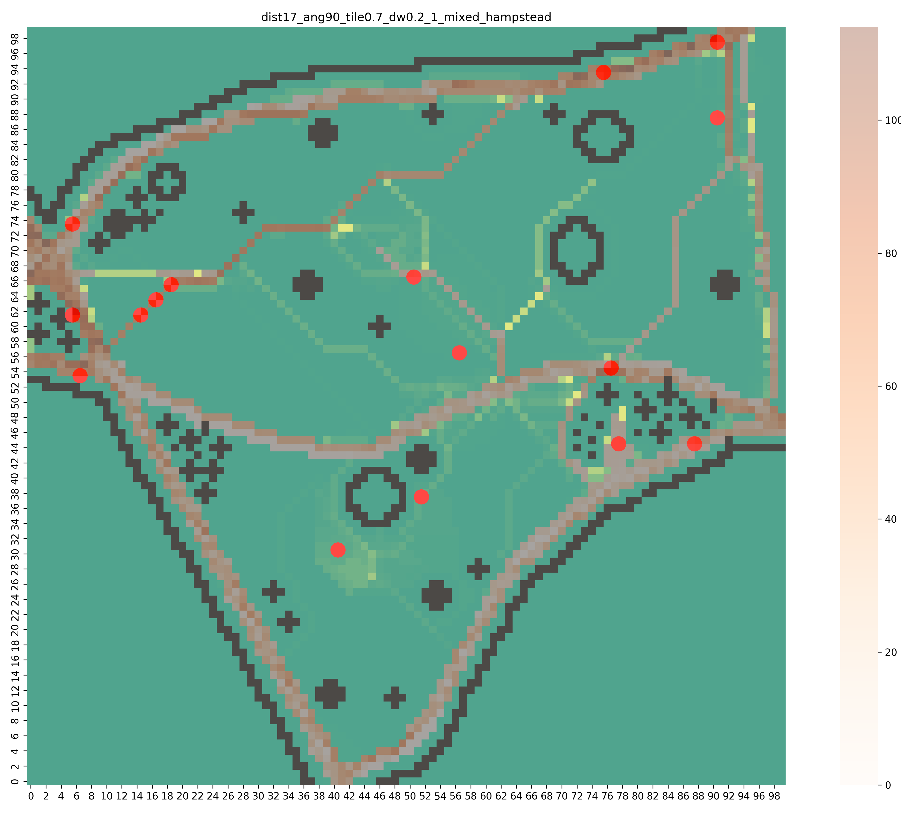
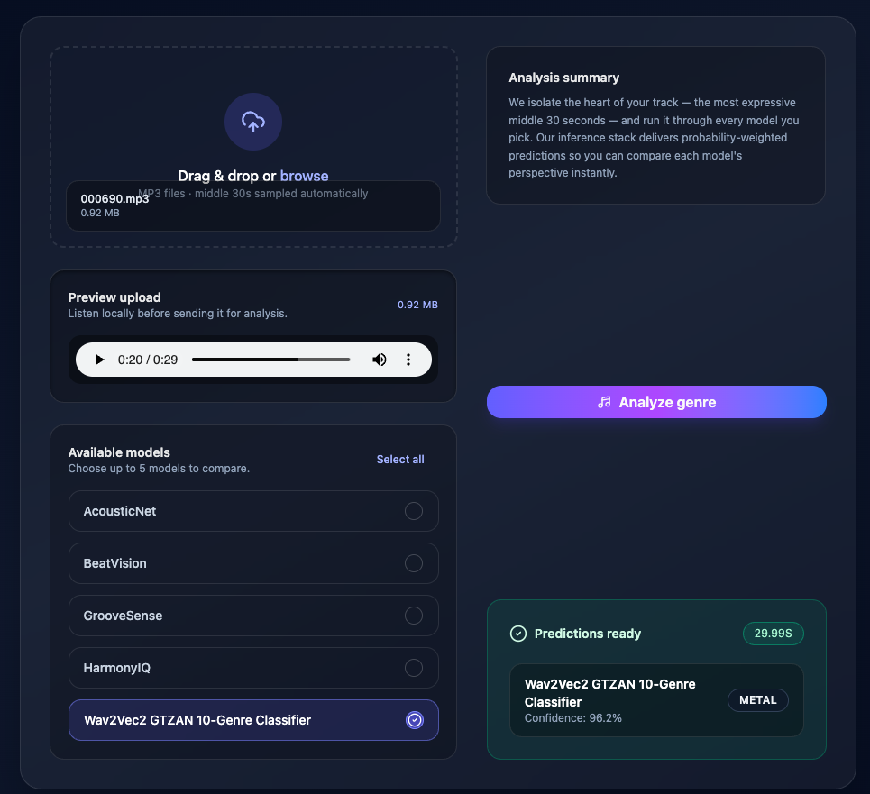
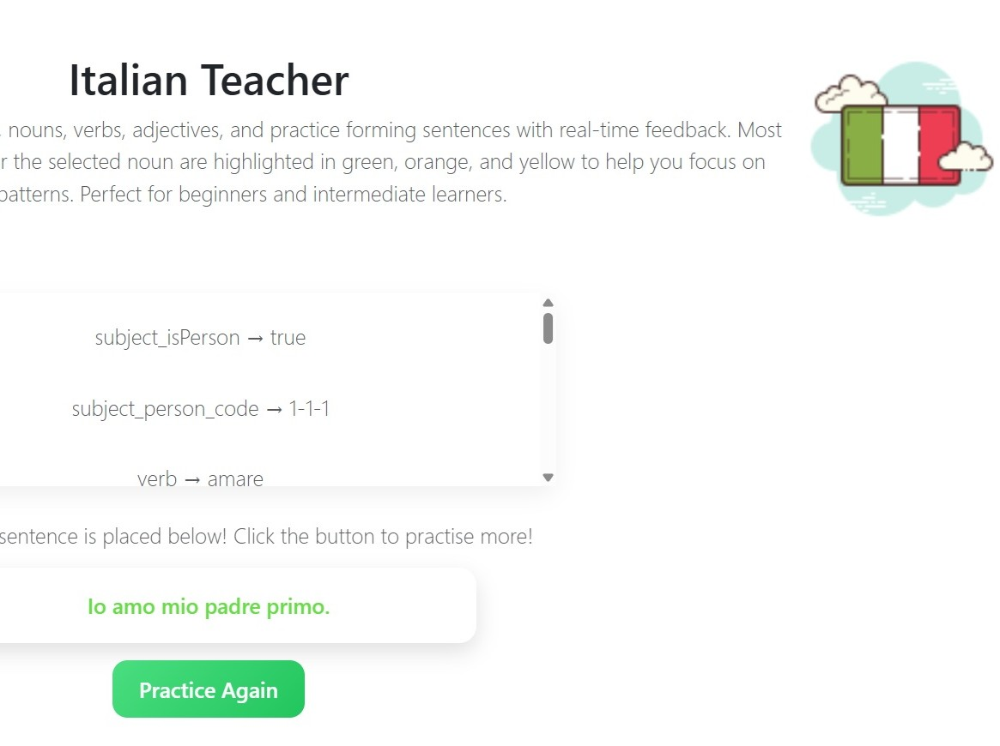
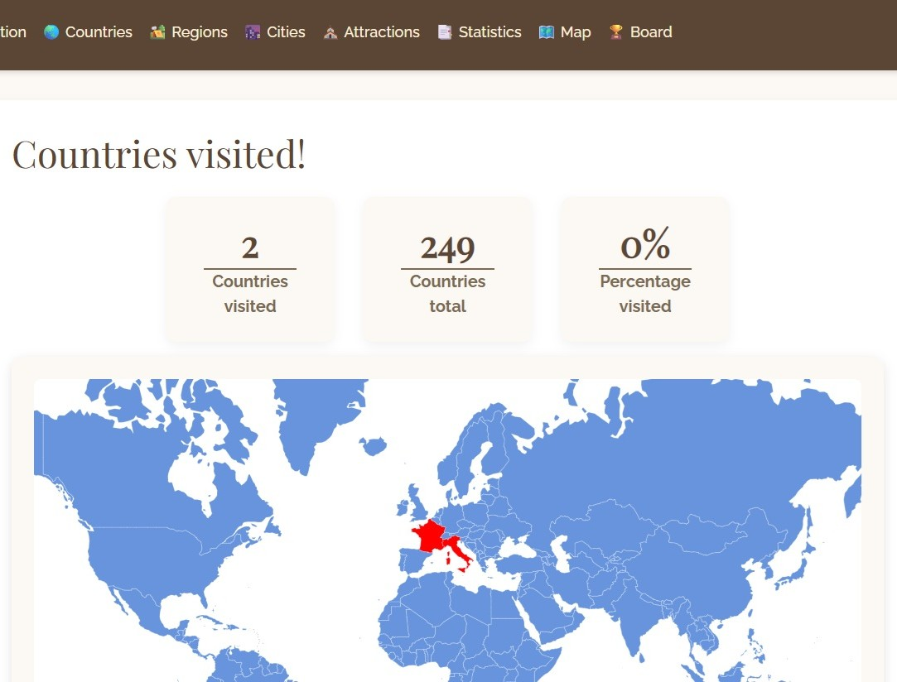
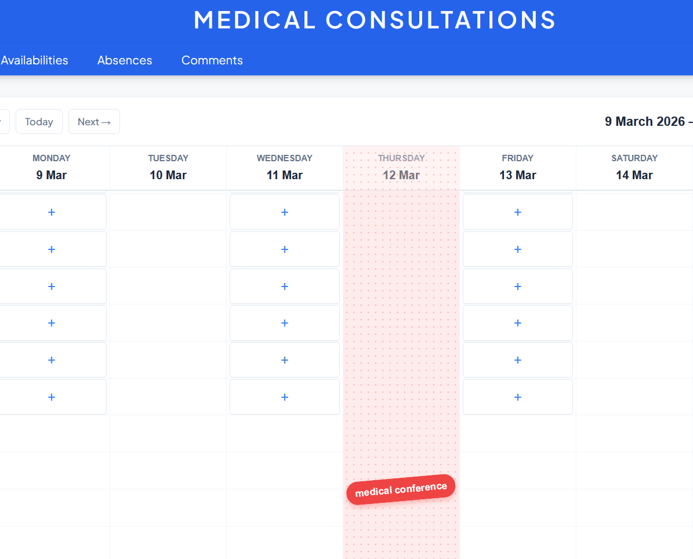
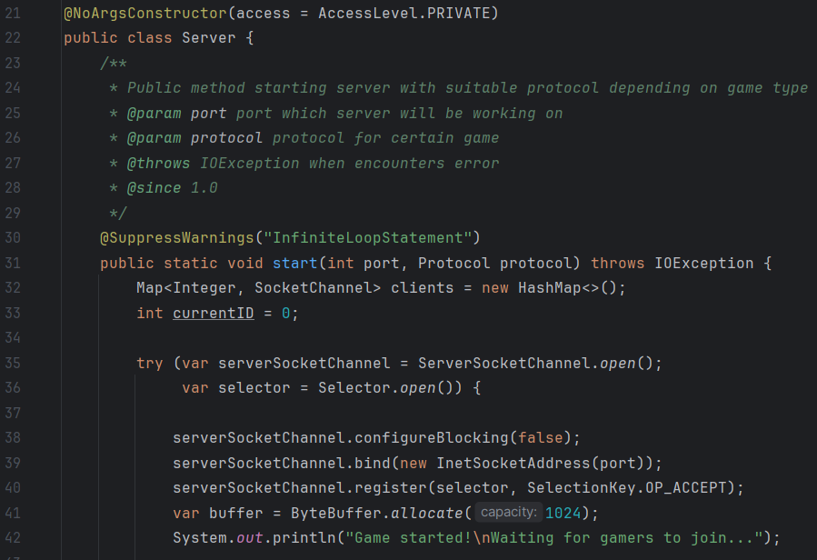
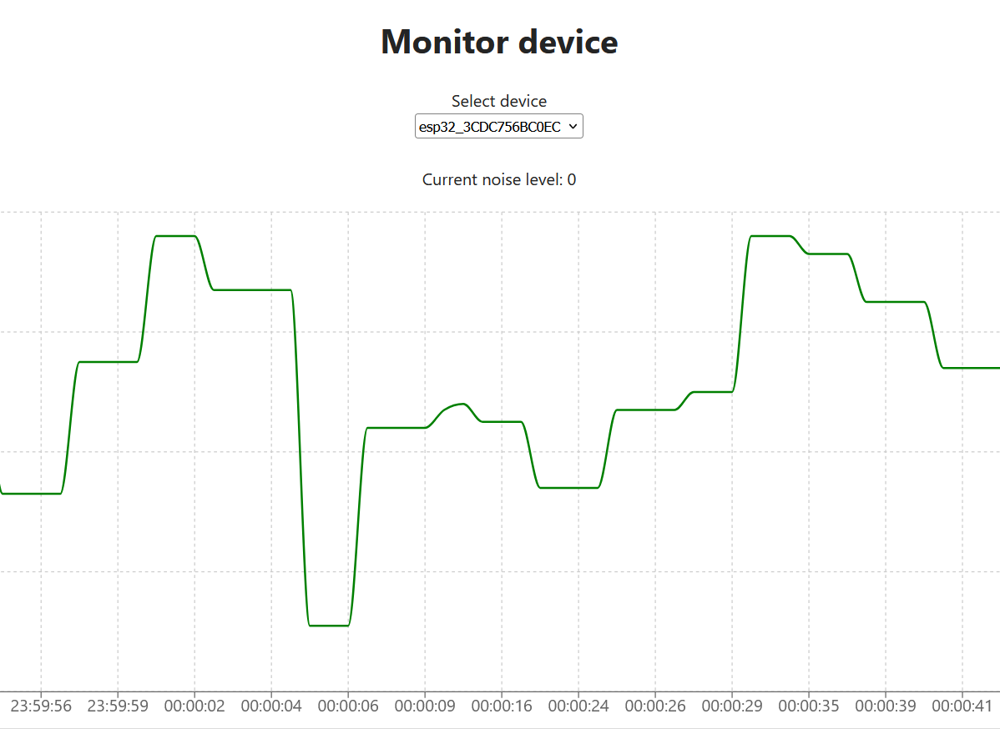
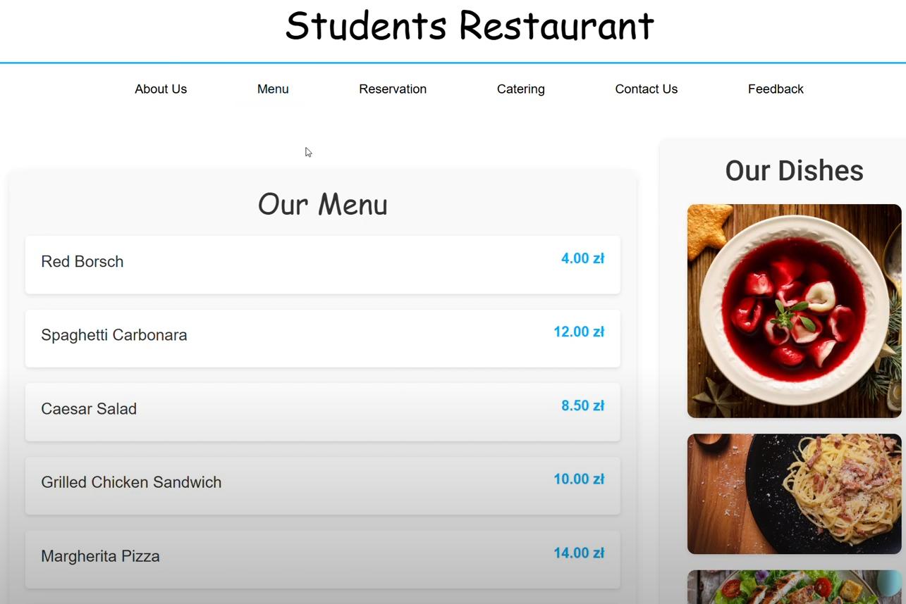
Interests
Piano
I’ve been learning to play the piano since I was 5 years old. Later I started exploring other keyboard instruments like organs and synths. I played classical music solo but I was also a member of a rock band Daylight and school orchestra KopernikBand you may see some of our performances on linked pages. Currently I am involved in christian music group Młodzi z Serca, we play in our parish and diocese on Masses, worships and adorations.
Travels
My second biggest passion is traveling and sightseeing. I focus especially on sacral monuments and other works of art and on the beauty of nature. I am really passionate about exploring the world and learning about different cultures, which is why I have been to several countries in Europe, Asia and Africa. So far I have been to:
- 2013-2022: Croatia (Istria, Krk island, Dalmatia)
- 2023:
- Porec
- WYD’23: Italy (Turin, Padua), Spain (San Sebastian, Barcelona) and Portugal (Pombal, Coimbra, Lisbon)
- EuroTrip: Vienna, Amsterdam, London, Edinburgh, Paris, Milan, Florence and Rome
- 2024:
- Rome
- Porec & Venice
- Japan: Osaka, Koya-san, Nara, Uji, Kioto, Kobe, Tokio, Nikko, Kamakura
- 2025:
- Budapest
- Rome
- Romania: Maramures, Moldova and Transylvania regions
- Thailand: Chiang Mai, Mae Hong Soon loop, Chiang Rai, Sukhothai, Lop Buri, Ayutthaya, Bangkok
- 2026:
- Prague
- Cairo